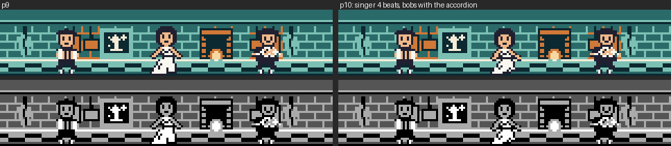
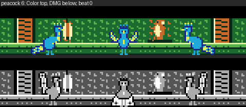
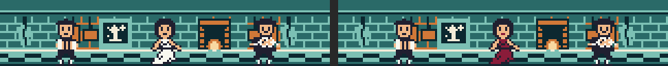
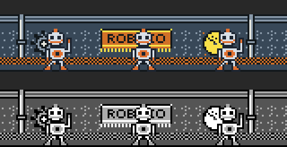

Open questions
Every question waiting on your answer, with its pictures. Answered questions come off this list. Reply in chat with the number, e.g. "Q12: shared".
3 open · updated 2026-11-03
Q26
Bistro band, pass 10
Is the Bistro band ready to lock?
- Singer: sways right, centre, left, centre in 4 beats, like the accordion
- She dips on the same beats as the accordion and fiddler; her hem squashes
- Accordion and fiddler unchanged
- Color only; left before, right new

Q27
Peacock lineup
Is the peacock lineup ready to lock, or does the front peacock need another pass?
- Two side peacocks face the middle and open their fans together
- The front peacock bounces; its resting frame's tufts may still look like arms, and its crouch fan is lopsided
- DMG: both birds fit, but the side ones have no fully closed tail
- Color top, DMG below

Q29
Singer in wine
Should the singer wear the wine dress and lips in the game?
- Left: today's white dress; right: wine dress and lips
- Color only: she needs her own colour set during the show, like the Saloon dancers; the DMG keeps grey
- Same pixels as pass 10 except her mouth

View
Robot lineup
Disco · groove · disco; Color over DMG

Before and now
Saloon dancer

Cheerleader